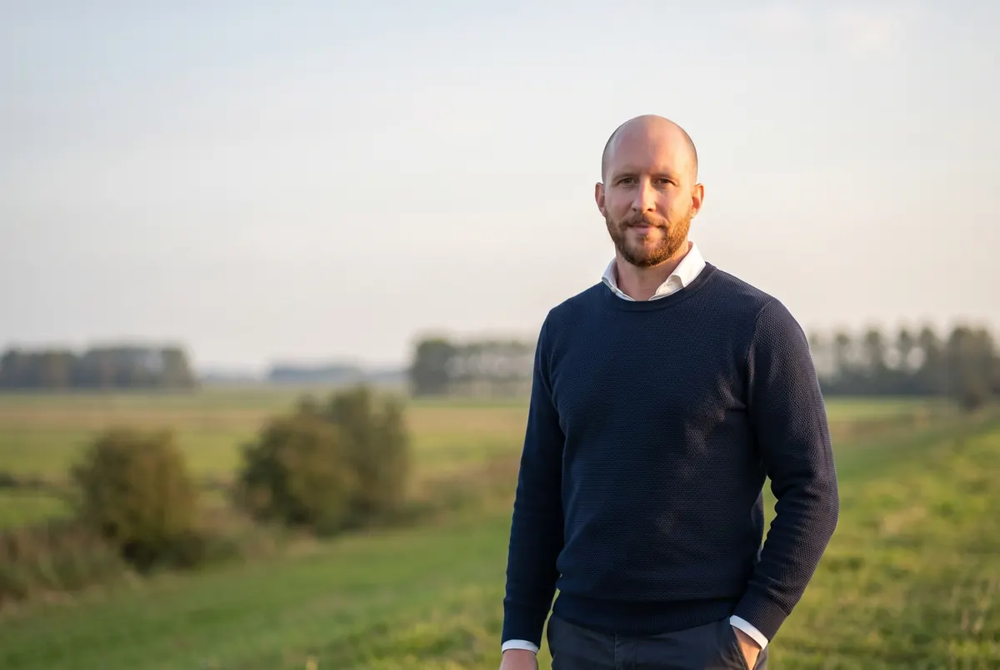

Financiële levensplanning · Zeeland en online
Voor wie rond of na zijn veertigste het leven opnieuw inricht. We beginnen bij waar je voor leeft. Daarna rekenen we uit of het klopt, ook als het leven anders loopt.
Of praat eerst met mij:Plan een kennismaking van 20 minuten

Herken je dit?
Je hebt iets opgebouwd. De vraag is nu waarvoor.
Vragen die ik aan de keukentafel hoor
Eerst één vraag
Welk cijfer geef je je leven nu?
En wat zou er nodig zijn om dat cijfer één punt hoger te maken? Over dat soort vragen schrijf ik elke zondag.
Wat een levensplan is
Een financieel levensplan is een plan voor de komende tien tot twintig jaar. Eerst staat erin hoe je wilt leven. Daarna wat dat betekent voor je geld.
Zo ziet een plan eruit
Ingrid en Paul, 54 en 57, uit Goes, willen over vijf jaar minder werken en hun dochter helpen met een huis. Zo zag hun plan eruit.
Ingrid en Paul bestaan niet. Hun verhaal is samengesteld uit situaties die vaak voorkomen. Bekijk het hele voorbeeld →
Zo werken we samen
We kijken of een plan je verder helpt.
Inkomen, vermogen, pensioen, wonen en wat er al geregeld is.
Wat gebeurt er als het leven lang, kort, rot of apart loopt?
Je keuzes, wat je regelt en waarom.
Het levensplan
€3.500 tot €8.500, inclusief btw
De prijs hangt af van je situatie: loondienst, een eenmanszaak of een of meer bv's. In de kennismaking hoor je de vaste prijs voor jouw situatie, voordat je iets beslist.
Eerst één vraag goed uitzoeken? Begin met Het gesprek: 90 minuten alleen (€395) of 120 minuten samen (€495). Start je binnen drie maanden een traject, dan trekken we het bedrag af.
Wie ik ben
Oud-rugbyinternational. Tien jaar fondsenwerving, betrokken bij het ophalen van ruim 250 miljoen euro voor goede doelen. Opgebrand, opnieuw begonnen. Sinds 2025 terug in de Zeeuwse polder waar ik geboren ben, als financieel levensplanner.
Liever écht zijn dan lijken.
Lees mee
Eén vraag, één inzicht en één stap. Over geld, werk en de keuzes die je ooit nog wilt maken.
Best gelezen